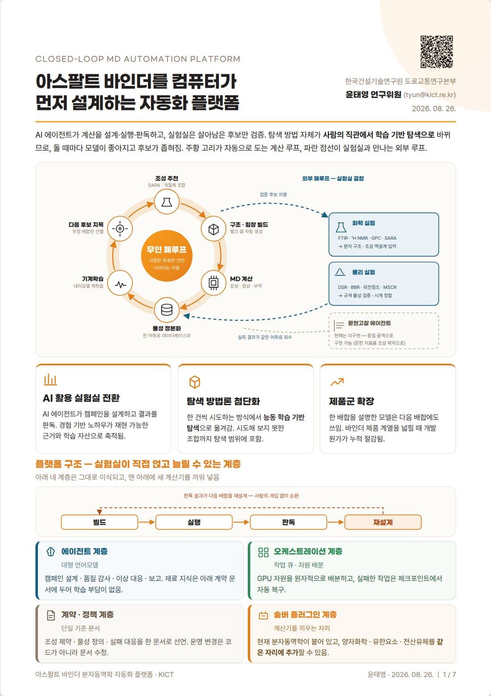
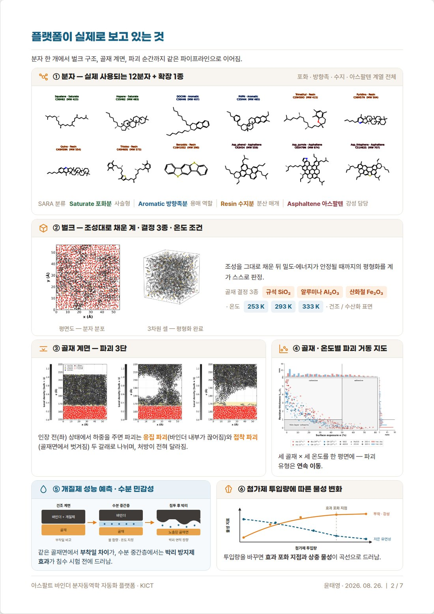
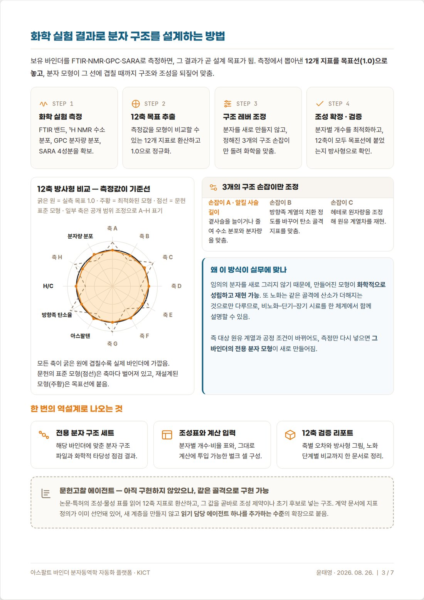
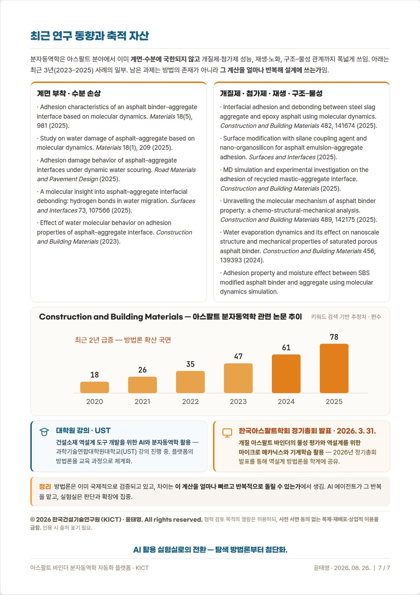

AUG 26, 2026 · PLATFORM OVERVIEW2026. 08. 26. · 플랫폼 소개
Closed-Loop MD Automation Platform for Asphalt Binder Design
아스팔트 바인더를 컴퓨터가 먼저 설계하는 자동화 플랫폼
Pages 1–3 and the last page (7 of 7) are shown. The document is in Korean. The full document requires a password; open the downloaded HTML file in a browser.
7쪽 중 1~3쪽과 마지막 쪽만 공개합니다. 전체 문서는 비밀번호를 넣어야 내려받을 수 있으며, 내려받은 HTML 파일을 브라우저로 열면 됩니다.



